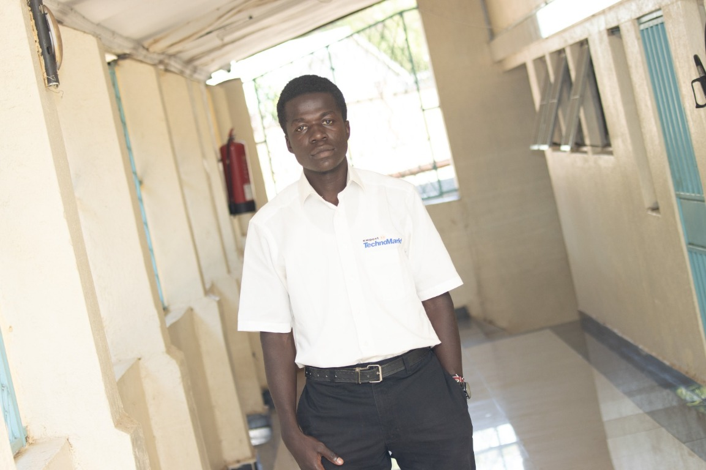

Cybersecurity analysis
Threat awareness, log review, triage, and defensive reasoning for suspicious activity and security events.

Emmanuel WilliamsCybersecurity portfolio · 2026—27
I’m Emmanuel Williams, an Aspiring Cybersecurity Engineer based in Kenya. I am building a practical foundation in defensive security, Linux hardening, web application security, and SOC-style analysis.
01 — A little context
I am actively building my cybersecurity foundation through structured self-study, lab-based practice, and applied security work. My interests are centred on defending systems, understanding attacker tradecraft, and communicating risk clearly to people who need actionable decisions.
I enjoy learning through security tools, network analysis, web security, and incident-response-style thinking. I value clear communication, responsible disclosure, and work that helps teams make better decisions.
More about working together02 — Skills and capabilities
Threat awareness, log review, triage, and defensive reasoning for suspicious activity and security events.
Packet and protocol analysis, port reconnaissance, host hardening, and understanding common attack surfaces.
Linux permissions, auditing, system checks, service monitoring, and basic security hardening practices.
OWASP-aligned awareness, input validation, authentication review, and secure configuration practices.
Analysing failed logins, suspicious activity, evidence handling, and documenting timelines and next steps.
Risk awareness, policy alignment, control review, and clear reporting for both technical and non-technical stakeholders.
03 — Evidence and practice
Filterable work across labs, tools, and security assessments.
04 — Security lab
Linux hardening, HTTP security headers, user authentication review, and structured incident analysis.
05 — Technical write-ups
Reviewing header hardening, risk trade-offs, and practical remediation recommendations for web applications.
A read-only audit checklist for permissions, SSH settings, user access, and common configuration weaknesses.
How to connect business risk, technical vulnerabilities, and realistic mitigation steps in a plain-language format.
06 — Certifications and learning
Institution attended.
Working through networking, access control, risk management, and core defensive concepts with structured study.
Building simple security scripts, baselining systems, and analysing controlled scenarios in a safe environment.
Expanding into secure coding awareness, web security, log review, and threat detection workflows.
07 — Experience
Practising with labs, sample incidents, scripts, and public security guidance while refining foundations in Linux, web security, and analysis.
Creating practical exercises in password analysis, HTTP header checks, integrity monitoring, and documentation-driven security assessments.
Preparing for entry-level cybersecurity roles by improving technical communication, lab discipline, and evidence-based reporting.
08 — Resume
Resume availability is intentionally placeholder-based until I am ready to publish a final public version.
Request CV details09 — Start a conversation
I am open to cybersecurity internships, entry-level opportunities, collaborations, and professional networking.